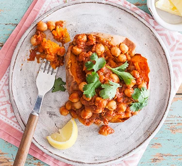

Vegan Chickpea

Ingredients
- 4 sweet potatoes
- 1 tbsp coconut oil
- 1 ½ tsp cumin seeds
- 1 large onion, diced
- 2 garlic cloves, crushed
- thumb-sized piece ginger, finely grated
- 1 green chilli, finely chopped
- 1 tsp garam masala
- 1 tsp ground coriander
- ½ tsp turmeric
- 12 tbsp tikka masala paste
- 2 x 400g can chopped tomatoes
- 2 x 400g can chickpeas, drained
- lemon wedges and coriander leaves, to serve
Instructions
-
Heat oven to 200C/180C fan/gas 6. Prick the sweet potatoes all over
with a fork, then put on a baking tray and roast in the oven for 45
mins or until tender when pierced with a knife.
-
Meanwhile, melt the coconut oil in a large saucepan over medium
heat. Add the cumin seeds and fry for 1 min until fragrant, then add
the onion and fry for 7-10 mins until softened.
-
Put the garlic, ginger and green chilli into the pan, and cook for
2-3 mins. Add the spices and tikka masala paste and cook for a
further 2 mins until fragrant, then tip in the tomatoes. Bring to a
simmer, then tip in the chickpeas and cook for a further 20 mins
until thickened. Season.
-
Put the roasted sweet potatoes on four plates and cut open
lengthways. Spoon over the chickpea curry and squeeze over the lemon
wedges. Season, then scatter with coriander before serving.